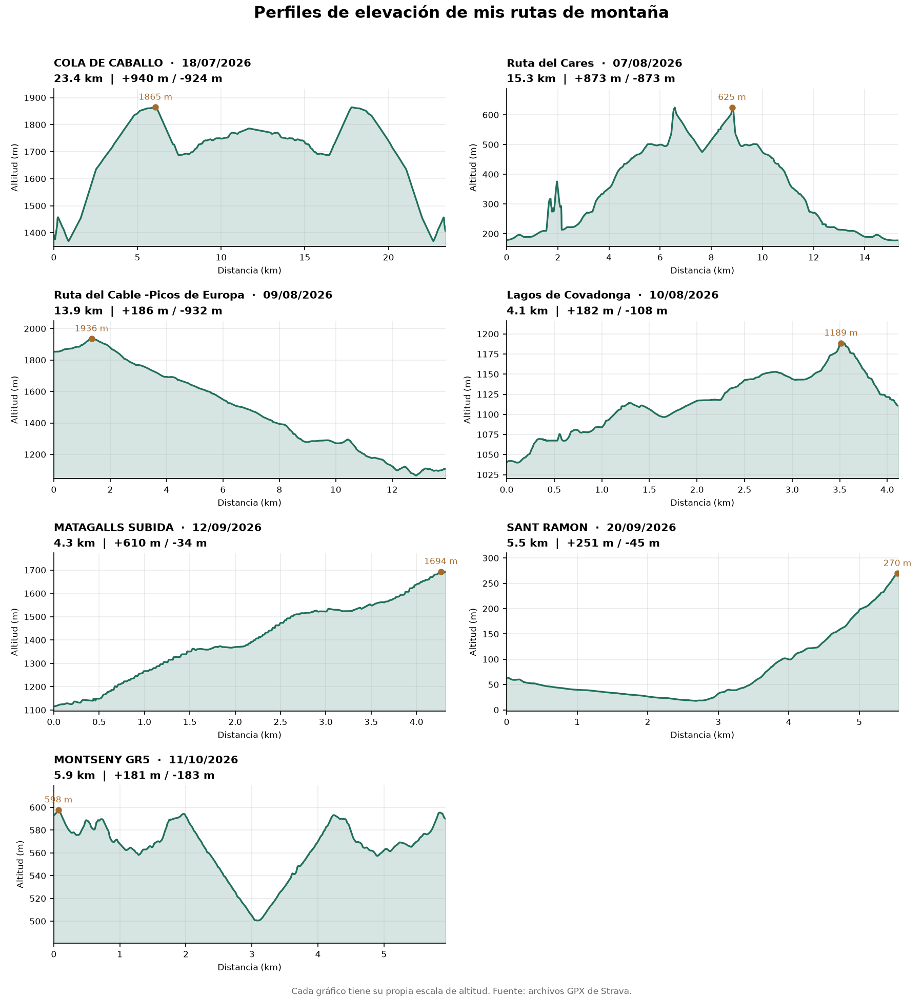

Leer los datos
Se recorren los puntos del GPX para extraer coordenadas, altitud, tiempo y, cuando están disponibles, datos de actividad.
Proyecto destacado
Un análisis reproducible de rutas GPS para transformar archivos GPX en estadísticas claras y perfiles de elevación comparables.
Visualización
Las estadísticas y los perfiles se actualizan al añadir archivos GPX y volver a ejecutar los scripts.
Cargando rutas…

Proceso
Dos scripts de Python automatizan la lectura, el cálculo de métricas y la creación del gráfico.
Se recorren los puntos del GPX para extraer coordenadas, altitud, tiempo y, cuando están disponibles, datos de actividad.
Se estima la distancia con Haversine y el desnivel con un umbral para reducir el ruido del altímetro.
Los perfiles se suavizan con una media móvil y se presentan en una cuadrícula de gráficos independientes.